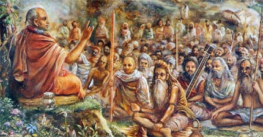
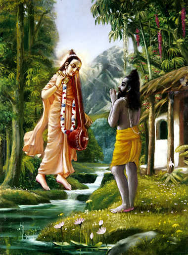

SB 1.4.1 — Vyāsadeva said: On hearing Sūta Gosvāmī speak thus, Śaunaka Muni, who was the elderly, learned leader of all the ṛṣis engaged in that prolonged sacrificial ceremony, congratulated Sūta Gosvāmī by addressing him as follows.
SB 1.4.2 — Śaunaka said: O Sūta Gosvāmī, you are the most fortunate and respected of all those who can speak and recite. Please relate the pious message of Śrīmad-Bhāgavatam, which was spoken by the great and powerful sage Śukadeva Gosvāmī.
SB 1.4.3 — In what period and at what place was this first begun, and why was this taken up? From where did Kṛṣṇa-dvaipāyana Vyāsa, the great sage, get the inspiration to compile this literature?
SB 1.4.4 — His [Vyāsadeva’s] son was a great devotee, an equibalanced monist, whose mind was always concentrated in monism. He was transcendental to mundane activities, but being unexposed, he appeared like an ignorant person.

SB 1.4.6 — How was he [Śrīla Śukadeva, the son of Vyāsa] recognized by the citizens when he entered the city of Hastināpura [now Delhi], after wandering in the provinces of Kuru and Jāṅgala, appearing like a madman, dumb and retarded?
SB 1.4.7 — How did it so happen that King Parīkṣit met this great sage, making it possible for this great transcendental essence of the Vedas [Bhāgavatam] to be sung to him?
SB 1.4.8 — He [Śukadeva Gosvāmī] was accustomed to stay at the door of a householder only long enough for a cow to be milked. And he did this just to sanctify the residence.
SB 1.4.9 — It is said that Mahārāja Parīkṣit is a great first-class devotee of the Lord and that his birth and activities are all wonderful. Please tell us about him.
SB 1.4.10 — He was a great emperor and possessed all the opulences of his acquired kingdom. He was so exalted that he was increasing the prestige of the Pāṇḍu dynasty. Why did he give up everything to sit down on the bank of the Ganges and fast until death?
SB 1.4.11 — He was such a great emperor that all his enemies would come and bow down at his feet and surrender all their wealth for their own benefit. He was full of youth and strength, and he possessed kingly opulences that were difficult to give up. Why did he want to give up everything, including his life?
SB 1.4.12 — Those who are devoted to the cause of the Personality of Godhead live only for the welfare, development and happiness of others. They do not live for any selfish interest. So even though the Emperor [Parīkṣit] was free from all attachment to worldly possessions, how could he give up his mortal body, which was the shelter for others?
SB 1.4.13 — We know that you are expert in the meaning of all subjects, except some portions of the Vedas, and thus you can clearly explain the answers to all the questions we have just put to you.
SB 1.4.14 — Sūta Gosvāmī said: When the second millennium overlapped the third, the great sage [Vyāsadeva] was born to Parāśara in the womb of Satyavatī, the daughter of Vasu.
SB 1.4.15 — Once upon a time he [Vyāsadeva], as the sun rose, took his morning ablution in the waters of the Sarasvatī and sat alone to concentrate.
SB 1.4.16 — The great sage Vyāsadeva saw anomalies in the duties of the millennium. This happens on the earth in different ages, due to the unseen force of time.
SB 1.4.17-18 — The great sage, who was fully equipped in knowledge, could see through his transcendental vision the deterioration of everything material due to the influence of the age. He could also see that the faithless people in general would be reduced in duration of life and would be impatient due to lack of goodness. Thus he contemplated for the welfare of men in all statuses and orders of life.
SB 1.4.19 — He saw that the sacrifices mentioned in the Vedas were means by which the people’s occupations could be purified. And to simplify the process he divided the one Veda into four, in order to expand them among men.
SB 1.4.20 — The four divisions of the original sources of knowledge [the Vedas] were made separately. But the historical facts and authentic stories mentioned in the Purāṇas are called the fifth Veda.
SB 1.4.21 — After the Vedas were divided into four divisions, Paila Ṛṣi became the professor of the Ṛg Veda, Jaimini the professor of the Sāma Veda, and Vaiśampāyana alone became glorified by the Yajur Veda.
SB 1.4.22 — The Sumantu Muni Aṅgirā, who was very devotedly engaged, was entrusted with the Atharva Veda. And my father, Romaharṣaṇa, was entrusted with the Purāṇas and historical records.
SB 1.4.23 — All these learned scholars, in their turn, rendered their entrusted Vedas unto their many disciples, granddisciples and great-granddisciples, and thus the respective branches of the followers of the Vedas came into being.
SB 1.4.24 — Thus the great sage Vyāsadeva, who is very kind to the ignorant masses, edited the Vedas so they might be assimilated by less intellectual men.
SB 1.4.25 — Out of compassion, the great sage thought it wise that this would enable men to achieve the ultimate goal of life. Thus he compiled the great historical narration called the Mahābhārata for women, laborers and friends of the twice-born.
SB 1.4.26 — O twice-born brāhmaṇas, still his mind was not satisfied, although he engaged himself in working for the total welfare of all people.
SB 1.4.27 — Thus the sage, being dissatisfied at heart, at once began to reflect, because he knew the essence of religion, and he said within himself:

SB 1.4.6 — How was he [Śrīla Śukadeva, the son of Vyāsa] recognized by the citizens when he entered the city of Hastināpura [now Delhi], after wandering in the provinces of Kuru and Jāṅgala, appearing like a madman, dumb and retarded?
SB 1.4.28-29 — I have, under strict disciplinary vows, unpretentiously worshiped the Vedas, the spiritual masters and the altar of sacrifice. I have also abided by the rulings and have shown the import of disciplic succession through the explanation of the Mahābhārata, by which even women, śūdras and others [friends of the twice-born] can see the path of religion.
SB 1.4.30 — I am feeling incomplete, though I myself am fully equipped with everything required by the Vedas.
SB 1.4.31 — This may be because I did not specifically point out the devotional service of the Lord, which is dear both to perfect beings and to the infallible Lord.
SB 1.4.32 — As mentioned before, Nārada reached the cottage of Kṛṣṇa-dvaipāyana Vyāsa on the banks of the Sarasvatī just as Vyāsadeva was regretting his defects.
SB 1.4.33 — At the auspicious arrival of Śrī Nārada, Śrī Vyāsadeva got up respectfully and worshiped him, giving him veneration equal to that given to Brahmājī, the creator.